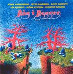

| Artist: | R@acirc;g I Ryggen |
| Title: | Râg I Ryggen |
| Label: | Transsubstans TRANS013 |
| Length(s): | 60 minutes |
| Year(s) of release: | 1975/2005 |
| Month of review: | [03/2006] |
| 1) | Det Kan Val Inte Vara Farligt | 5.43 |
| 2) | You Know It Ain't Easy | 7.27 |
| 3) | Spangaforsens Brus | 5.58 |
| 4) | Jan Banan | 5.16 |
| 5) | Naked Man | 6.18 |
| 6) | Queen Of Darkness | 4.38 |
| 7) | Sanningsserum | 6.42 |
| 8) | Sanningsserum (live, Bonus Track) | 7.26 |
| 9) | Jan Banan (live, Bonus Track) | 5.26 |
| 10) | Land Over The Rainbow (live, Bonus Track) | 5.15 |
You Know It Ain't Easy is quite lengthy track, with a good performance from the vocalist. The vocal melodies are good and distinctive, although the lyrics are typical relation problem material. The song has some Deep Purple style organ play, although on the whole I tend to liken the band to Jane, a blues oriented and melodic take on progrock.
Spangaforsens Brus is an iunstrumental with a strong folk influence. The music is on the frolic side with the guitarists each playing in one of my ears. The music is quite symphonic here too, as surprisingly enough most of this album is due to helpings of organ, and an overall melodic approach.
Jan Banan is not instrumental, and sung in Swedish. The presence of both English and Swedish gives an album a bit of an arbitrary feel. This song is full of fuzz guitar (in one ear), and clean bluesy injections (in the other). For the remainder this is a relatively straightforward song, with good melodies though and the organ filling in the backdrop. The main guitar melodies have something of Spanish flamenco. The fuzz guitar also adds some rhythmic elements, and the use of the keyboard is distinctive.
Naked Man is a lot less interesting. This is a straightforward plodding rock song, with a strong seventies rhythm guitar element, a bit tiring even. And the lyrics are trite too. The second half has some Tull style flute, though.
Queen Of Darkness has a similar approach: the vocal lines are not very interesting, but the middle part has some mellow symphonic parts played on synths. It sounds dated, but still. Later we even get an actual keyboard solo. Surprisingly, the vocal parts do not return. Sanningsserum is the final studio track, with heavy guitar chords and the guitars going for it at the same time, and the organ adding some manical elements. The song is typical riff oriented material and comparable to Jan Banan, with the organ in Deep Purple style. The song itself adds little to the foregoing, indeed some elements have been heard identically already.
The final three tracks are live bonus track, with a sound quality substantially below that of the album (especially the drums). It shows a band even a bit more energetic and rocking -- which is not that surprising -- which does make the lesser sound quality less of a problem. First we get Sanningsserum, followed by Jan Banan. Then we get a song as yet unheard, Land Over The Rainbow. This is a more atmospheric track, with a more symphonic and epic feel. The song takes its time building up on guitar, after which the organ come in for support.